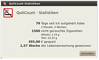
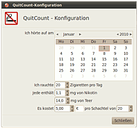

QuitCount
Ausbaufähige Anleitung
Dieser Anleitung fehlen noch einige Informationen. Wenn Du etwas verbessern kannst, dann editiere den Beitrag, um die Qualität des Wikis noch weiter zu verbessern.
Anmerkung: Dieses Programm wurde noch nicht unter der Desktop-Umgebung Unity getestet.
Dieser Artikel wurde für die folgenden Ubuntu-Versionen getestet:
Ubuntu 14.04 Trusty Tahr
Zum Verständnis dieses Artikels sind folgende Seiten hilfreich:
QuitCount ist ein Programm, welches (Ex-)Raucher unterstützen soll, ihre Sucht in den Griff zu kriegen oder sich sogar ganz davon zu lösen. Das Programm QuitCount ist im Juli 2009 von Colin Leroy veröffentlicht worden und wurde unter der GPL Version 3 lizenziert.
Installation¶
QuitCount kann über das gleichnamige Paket installiert [1] werden:
quitcount (universe)
 mit apturl
mit apturl
Paketliste zum Kopieren:
sudo apt-get install quitcount
sudo aptitude install quitcount
Inbetriebnahme¶
| Das Icon im GNOME-Panel |
Nach einem Neustart des Rechners startet das Programm immer automatisch, da ein Eintrag im Autostartmenü angelegt wird (siehe Autostart). Solange das Programm in Betrieb ist, sieht man im GNOME-Panel bzw. im Startmenü ein Symbol (Icon), welches weitere Funktionen bietet:
 Linksklick:
Linksklick:Öffnen des Statistikfensters
 Rechtsklick:
Rechtsklick:Einstellungen (siehe Konfiguration)
Statistik (wie Linksklick)
Infos zum Programm
Option zum Beenden des Programms
Statistiken¶
|  |
| QuitCount Statistiken |
QuitCount stellt einen Zähler dar, der die Einsparungen seit dem Tag des Aufhörens anzeigt. Dabei werden jedoch nicht nur die monetären Einsparungen angezeigt, sondern auch die Menge des nicht inhalierten Teers und Nikotins sowie die Anzahl der eingesparten Zigaretten und die seit dem „Tag X“ verstrichene Zeit. Inwieweit man sich auf die Anzeige der dadurch gewonnenen Lebenszeit verlassen kann, bleibt jedem Anwender selbst überlassen.
Konfiguration¶
|  |
| QuitCount Konfiguration |
Um diese Statistik zu erhalten, muss man dem Programm einmalig mitteilen, wie viele Zigaretten man pro Tag geraucht hat, wie hoch der Teer- und Nikotingehalt pro Zigarette war, wie viel eine Schachtel kostet und die Anzahl der darin enthaltenen Zigaretten. Die Konfigurationsdaten werden automatisch beim erstmaligen Aufruf von QuitCount abgefragt oder können jederzeit mit einem Rechtsklick auf Konfiguration über das QuitCount-Symbol geändert werden.
Manuelle Konfiguration¶
Alternativ kann man die Konfigurationsdatei auch über das Homeverzeichnis anschauen oder editieren [2]. Man findet diese in der Datei ~/.config/quitcount:
stop_date=1262304061 ## Stopp-Datum num_per_day=20 ## Zigaretten pro Tag price_per_pack=5 ## Preis pro Päckchen nicotine_per_cig=1.10 ## Nikotin pro Zigarette tar_per_cig=14 ## Teer pro Zigarette pack_size=20 ## Zigaretten pro Packung currency=€ ## Währung
Autostart¶
Das Programm legt einen Eintrag quitcount im Autostart an, so dass es in der Lage ist, ein Symbol im GNOME-Panel anzuzeigen. Über dieses kann der Nutzer gezielt und einfach Statistiken abrufen, ohne das Programm extra starten zu müssen. Der Eintrag im Autostartmenü lässt sich jederzeit deaktivieren bzw. entfernen [3].
Belobigung & Motivation¶
| QuitCount motiviert mit „Daumen hoch!“ |
Zu besonderen Anlässen erscheint statt des QuitCount-Symbols im GNOME-Panel ein nach oben abgespreizter Daumen („Daumen hoch“). Dies passiert, wenn bestimmte Zahlen in der Statistik erreicht werden. Beispielsweise nach 100 rauchfreien Tagen oder 400 nicht gerauchten Zigaretten. Diessoll dem Anwender die durchlittene Zeit durch ein wenig Motivation erträglicher machen.
Beenden¶
Das Programm wird durch einen Rechtsklick auf das Symbol im Panel und Beenden gestoppt. Natürlich zählen die Statistiken weiter; man muss sich keine Sorgen machen, dass diese verloren gehen könnten oder nicht weiter gezählt werden. Ruft man das Programm nach einer Woche wieder auf, werden die Statistiken um die Daten der vergangenen Woche ergänzt und man weiß wieder auf die Zigarette und den Euro genau, was man sich, seiner Gesundheit und dem Geldbeutel erspart hat.
- Erstellt mit Inyoka
-
 2004 – 2017 ubuntuusers.de • Einige Rechte vorbehalten
2004 – 2017 ubuntuusers.de • Einige Rechte vorbehalten
Lizenz • Kontakt • Datenschutz • Impressum • Serverstatus -
Serverhousing gespendet von